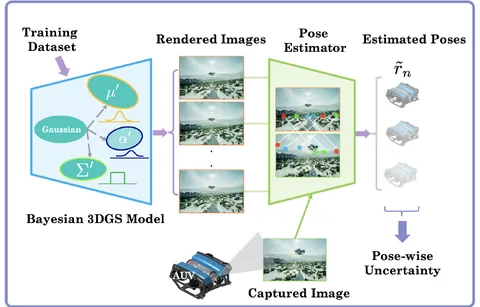
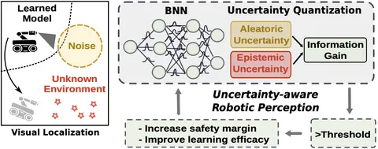
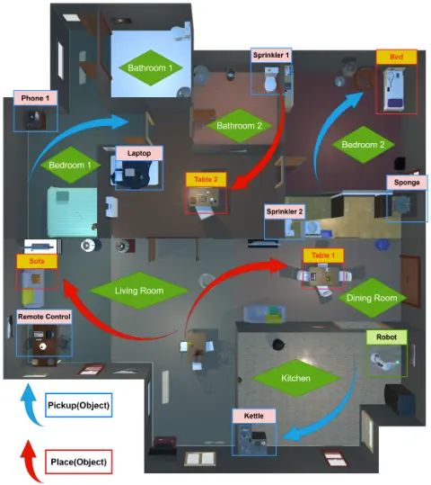

I am a Ph.D. student in Electrical Engineering at the University of Notre Dame, advised by Prof. Mengxue Hou in the ROAR Lab.
My research is on robot perception and manipulation under uncertainty. I work on uncertainty-aware scene representations based on 3D Gaussian Splatting, and on making vision-language-action (VLA) policies safer to deploy on real robots.
Before Notre Dame, I received my M.S. in Mechanical Engineering and Materials Science from Duke University and my B.S. in Mechanical Engineering from Florida Institute of Technology.
A variational 3DGS model gives the robot an expected occupancy map and an uncertainty map of the scene. Candidate trajectories with high collision risk or high uncertainty are rejected before execution, which reduces collisions compared with deterministic 3DGS, especially in sparse or occluded regions.

We place variational distributions over the position, opacity, and scale of each Gaussian. Sampling the model gives a set of rendered images and a distribution of estimated poses, so the vehicle can find regions where its localization is unreliable.
Vision-based Motion Tomography (VMT) estimates an unknown flow field from images the AUV captures only now and then, without direct localization. In simulation, the estimated flow map converges to the ground truth.

A mixed-signal Bayesian neural network engine estimates aleatoric and epistemic uncertainty for robot visual localization. When the uncertainty passes a threshold, the robot can increase its safety margin.

Inter-LLM interleaves LLM task planning with motion planning so a mobile manipulator can pick up and place many objects across a large multi-room scene graph. It improves overall mission performance by 30% over SayPlan and MoMa-LLM.